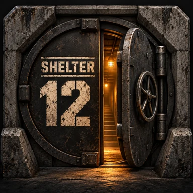
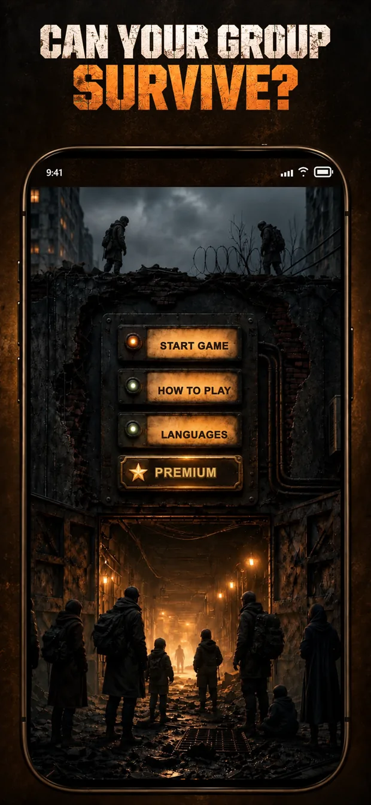
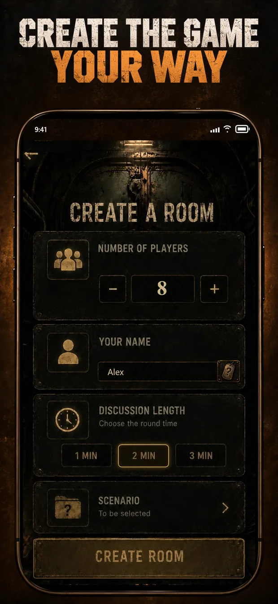
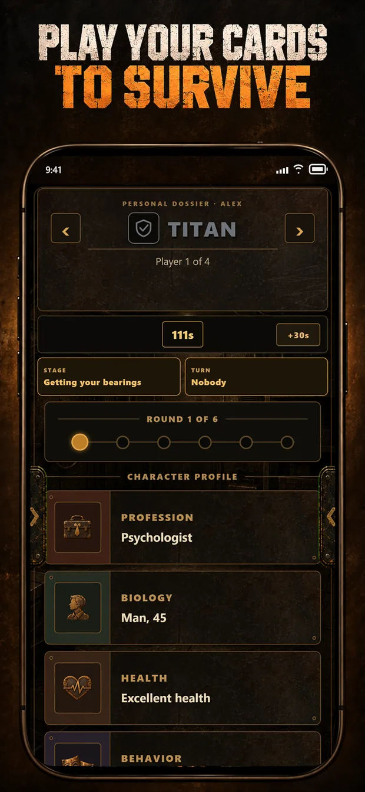
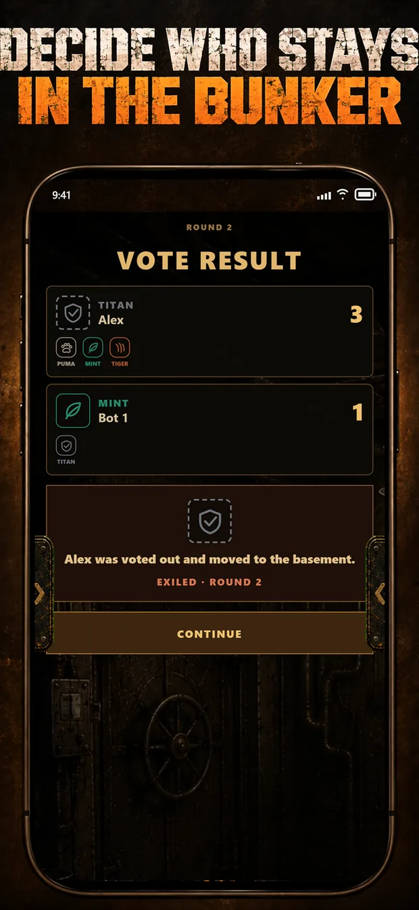
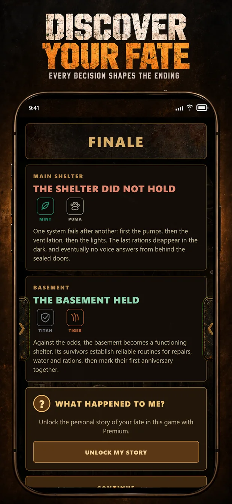

Odkrywaj
Otrzymaj tajne dossier i ujawniaj po jednej karcie: zawód, zdrowie, bagaż, fakty i zdolności.

SHELTER 12Towarzyska gra o przetrwanie
Broń swojej tajnej postaci, ujawniaj słabości znajomych i głosuj. W Shelter 12 wygnanie to dopiero początek.

Twój argument to twoje życie
Aplikacja pilnuje sekretów i liczy głosy. Perswazja, sojusze i zdrady należą wyłącznie do was.
Otrzymaj tajne dossier i ujawniaj po jednej karcie: zawód, zdrowie, bagaż, fakty i zdolności.
Broń słabości, zmieniaj dziwne cechy w zalety i zdecyduj, kogo grupa może poświęcić.
Wysyłaj graczy do piwnicy, stawiaj czoła incydentom i poznaj finał ukształtowany przez wasze decyzje.




Każda rozgrywka opowiada inną historię
Wygnani trafiają do piwnicy, otrzymują tajne informacje i nadal wpływają na ludzi na górze.
Postacie, katastrofy, warunki schronu, incydenty, zdolności i sekrety zmieniają każdą dyskusję.
Bunkier i piwnica otrzymują osobne finały wynikające z ludzi, zasobów i decyzji.
Gospodarz otwiera pokój, znajomi skanują kod QR, a tajne karty pozostają na ich telefonach.
Wygnany, ale nie wykluczony
Przegrane głosowanie nie zmienia gracza w widza. Piwnica staje się drugą grupą z własnymi informacjami, presją i szansą na przeżycie ludzi, którzy odrzucili ją z góry.
FAQ
Shelter 12 jest przeznaczone dla 4–12 osób grających razem w jednym miejscu.
Tak. Każda osoba używa iPhone’a lub Androida do prywatnych kart, a dyskusja odbywa się twarzą w twarz.
Nie do standardowych gier. Opcjonalne logowanie służy do zakupu i przywracania Premium.
Tak. Telefony łączą się z jednym prywatnym pokojem przez usługę Shelter 12.
Talia tematyczna, kontrola użyteczności i trudności, różnice postaci oraz osobiste epilogi.
Drzwi się zamykają
Zaproś 4–12 znajomych. My rozdamy sekrety. Wy zdecydujecie, kto zasługuje na miejsce na górze.